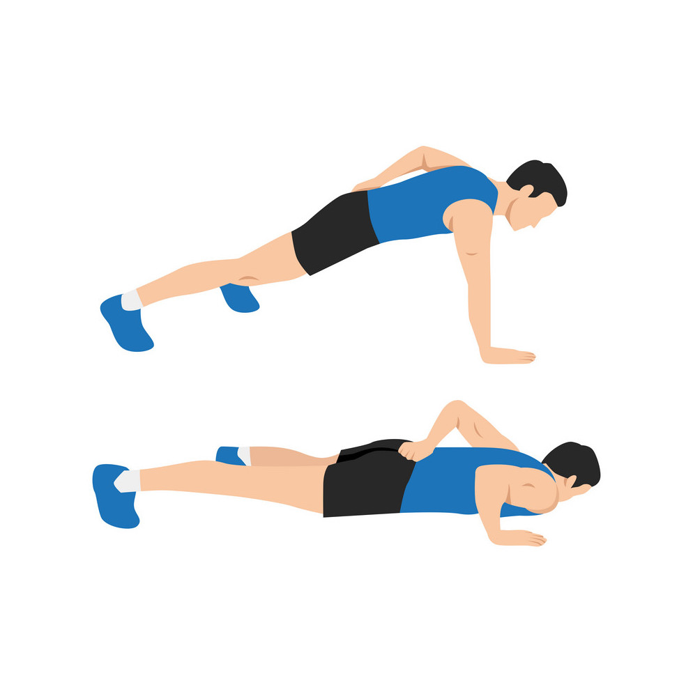
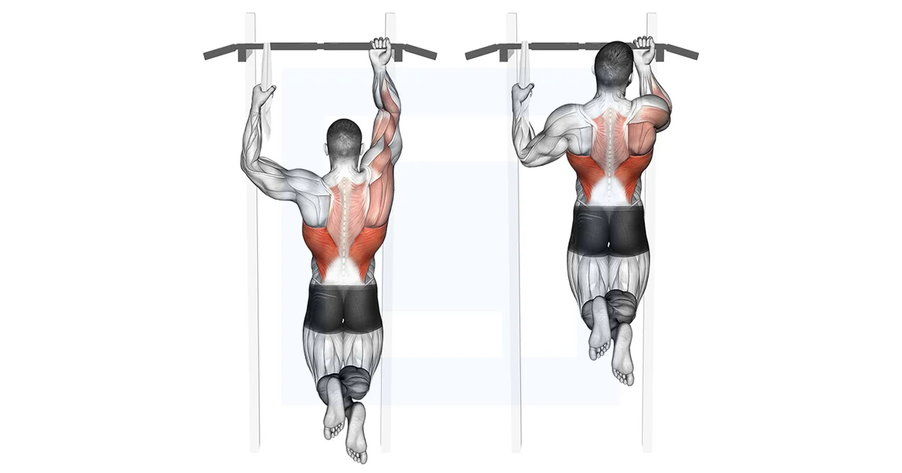
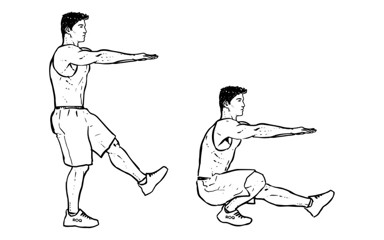
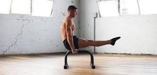
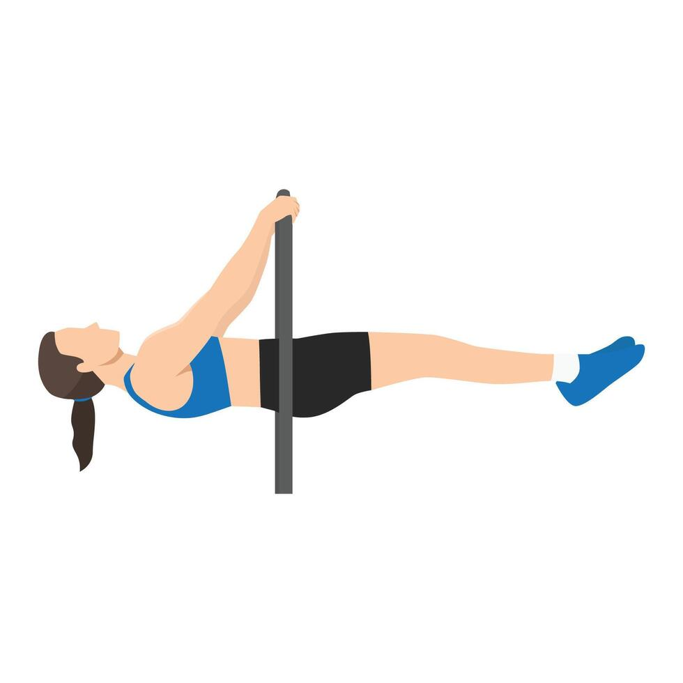
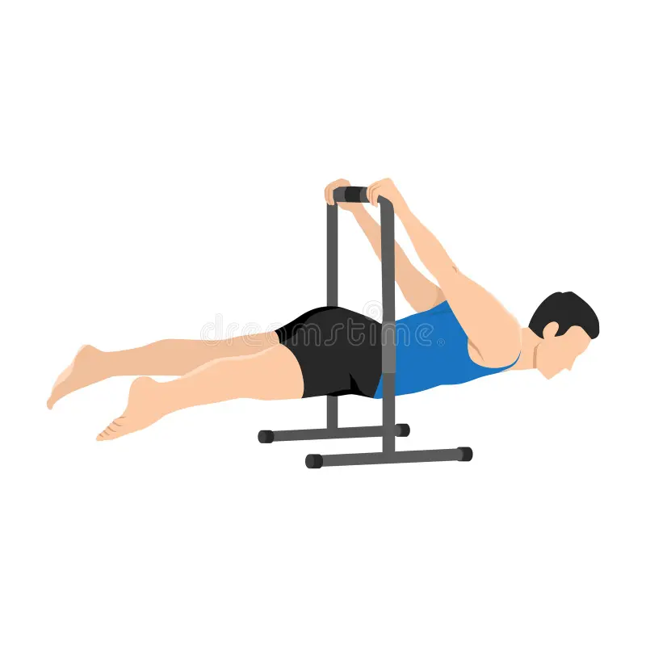
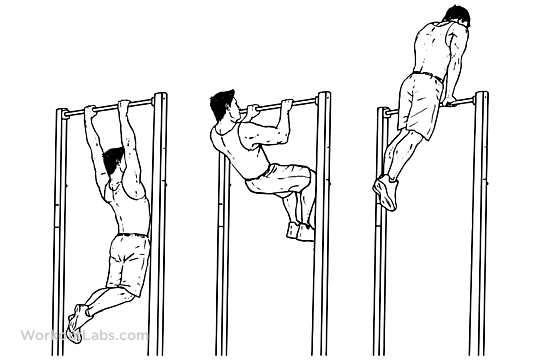
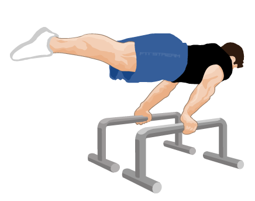

One arm push up
One-arm push-up este un exercițiu avansat de forță care pune accent pe mușchii pieptului, umerilor, tricepșilor, precum și pe mușchii de stabilizare ai trunchiului. Acest exercițiu necesită o combinație de forță, echilibru și coordonare. Este adesea folosit în antrenamente de către sportivii care doresc să-și testeze și să-și îmbunătățească puterea generală și controlul corpului.
Învață one arm push upOne arm pull up
Tracțiunea cu o singură mână este un exercițiu avansat de forță, extrem de dificil, care pune accent pe dezvoltarea spatelui (în special mușchii dorsali și romboizi), bicepsului, antebrațelor și mușchilor de stabilizare ai trunchiului. Necesită un nivel ridicat de putere, coordonare și tehnică, fiind potrivit pentru practicanții experimentați de calistenie sau sportivi care caută să-și depășească limitele de forță.
Învață one arm pull upPistol squat
Pistol squat este un exercițiu avansat de forță și echilibru, care implică realizarea unei genuflexiuni complete pe un singur picior, în timp ce celălalt picior rămâne întins în față. Acest exercițiu solicită intens musculatura picioarelor (în special cvadricepșii, fesierii și mușchii gambei), precum și musculatura de stabilizare a trunchiului. Este ideal pentru sportivii care doresc să îmbunătățească forța, mobilitatea și echilibrul.
Învață pistol squatL sit
L-sit este un exercițiu de calistenice care implică menținerea corpului într-o poziție statică, în care trunchiul este drept și picioarele sunt întinse orizontal în față, formând un unghi de 90° între corp și picioare. Este un exercițiu avansat, ce dezvoltă forța izometrică a mușchilor abdominali, a flexorilor șoldului, a umerilor și a tricepșilor, îmbunătățind totodată mobilitatea și controlul corporal.
Învață L sitFront lever
Front lever este un exercițiu avansat de calistenice care implică menținerea corpului într-o poziție orizontală, paralel cu solul, suspendat de o bară fixă. Acest exercițiu dezvoltă o forță impresionantă în musculatura spatelui (în special dorsalii și romboizii), în abdomen, umeri și brațe. Este un test de control, echilibru și stabilitate, utilizat frecvent în gimnastică și antrenamente de calistenie.
Învață front leverBack lever
Back lever este un exercițiu avansat de gimnastică și calistenice, care constă în menținerea corpului într-o poziție orizontală, paralel cu solul, suspendat de o bară sau inele, cu fața orientată în jos. Este o mișcare izometrică ce necesită forță, flexibilitate și control, punând accent pe musculatura spatelui, umerilor, trunchiului și șoldurilor. Acest exercițiu este ideal pentru dezvoltarea stabilității și a puterii relative.
Învață back leverMuscle up
Muscle-up este un exercițiu complex și avansat care combină o tracțiune (pull-up) și o împingere (dip) într-o singură mișcare fluidă, permițând ridicarea corpului deasupra unei bare sau inele. Este un exercițiu popular în calistenie și antrenamente funcționale, dezvoltând forța explozivă, coordonarea și controlul corporal. Muscle-up implică musculatura spatelui, bicepsului, umerilor, pieptului, tricepsului și a trunchiului.
Învață muscle upPlanche
Planche este un exercițiu avansat de gimnastică și calistenice, care implică susținerea întregului corp paralel cu solul, folosindu-te doar de mâini. Este o mișcare isometrică ce necesită o combinație de forță, echilibru, stabilitate și flexibilitate. Planche dezvoltă intens musculatura umerilor, pieptului, brațelor, spatelui și trunchiului, fiind considerată un test suprem al controlului corporal.
Învață planche